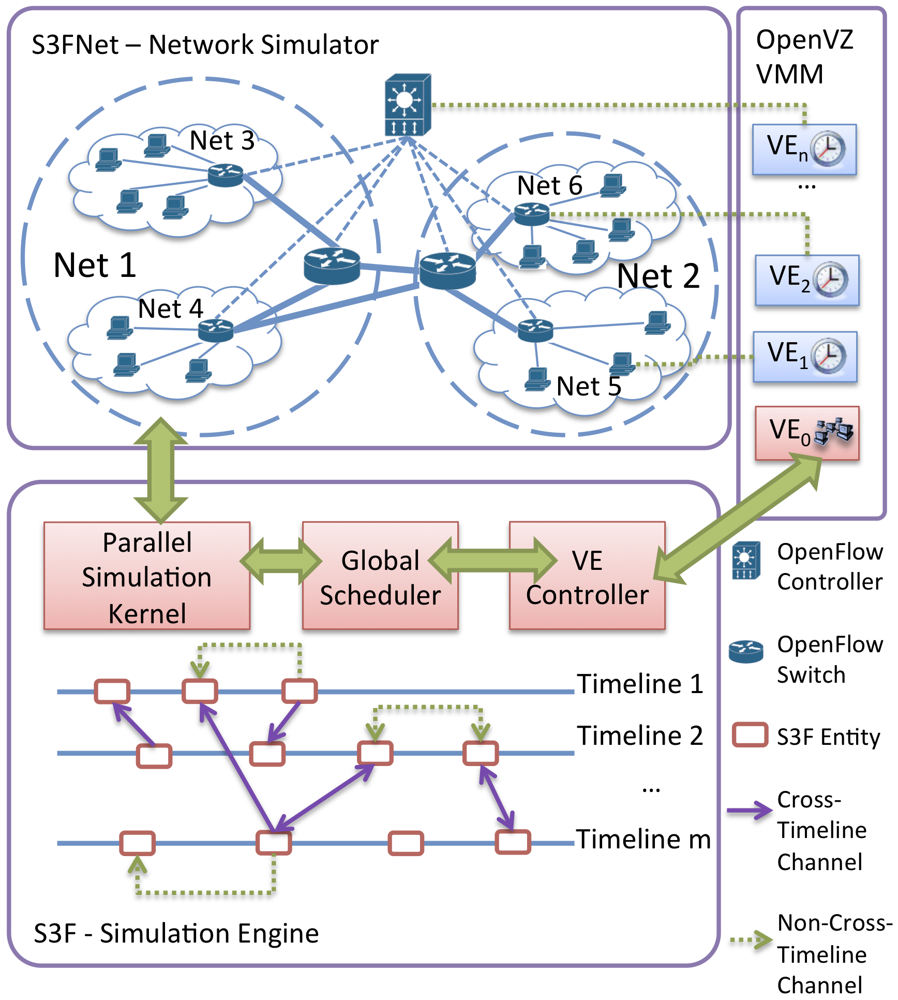

|
Existing network architectures
fall short when handling networking trends, e.g.,
mobility, server virtualization,
and cloud computing, as well as market
requirements with rapid changes.
Software-defined networking (SDN)
is designed to transform network architectures by
decoupling the control plane
from the data plane.
Intelligence is shifted to the
logically centralized controller with
direct programmability, and the
underlying infrastructures
are abstracted from
applications. Our ongoing
research on SDN mainly focuses
on two areas.
First, it
is critical to ensure that network policy (e.g.,
security/performance) remains
consistent during state
transitions. However, even networks with
centralized control like SDN are incapable to
control the exact timing of
network events, ultimately
leading to inconsistency
between policy and actual
desired network behavior. We
investigate a generic framework
which supports customizable
consistency policies under temporal
uncertainty about the network state.
For any given consistency
policy, our framework
synthesizes a
correct
update plan while heuristically
minimizing transition delay.
Second,
the wide adoption of SDN in
network industries has motivated
us to
development of large-scale testbeds for evaluation
of systems that incorporate SDN
with desired performance
fidelity.

Publication
|